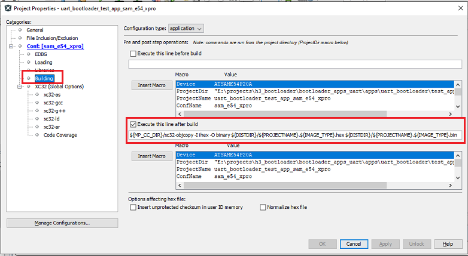

Configuring a PIC32M based Application to be bootloaded
- For PIC32M devices custom linker script has to be created and added to application project.
- All the Application code including the reset handler and IVT’s has to be placed in Program flash memory as bootloader is residing in boot flash memory
- Below mentioned configuration may vary from device to device and based on the application being configured
Setting Up the Application linker script
-
For Quck start, Refer to pre developed application linker scripts placed in bootloader_apps_uart/apps/uart_bootloader/test_app/firmware/src/<config>/app_XX.ld
- The vector address of a given interrupt is calculated using Exception Base (EBASE) CPU register, which provides a 4 KB page-aligned base address value located in the kernel segment (kseg) address space.
- The MIPS32 core requires that Interrupt Vector Tables (IVTs) be placed on a 4 KB boundary
- The address is calculated by using EBASE and VS values. The VS bits provide the vector spacing between adjacent vector addresses
- Each vector in the table is created as an output section located at an absolute address based on values of the _ebase_address and _vector_spacing symbols
For PIC32MZ Device
- Reset Address for the application to be loaded through bootloader should match the Application start address mention in bootloader project.
- For devices with larger boot flash memory where the bootloader resides completely in boot flash memory the application start address by default will be start of program flash memory 0x9D000000
- The Initial 4KB are used by Reset Handler and cache_init section
- Below are few configurations to be taken care in the linker script
PROVIDE(_vector_spacing = 0x0001);
PROVIDE(_ebase_address = 0x9D001000);
_RESET_ADDR = 0x9D000000;
kseg0_program_mem (rx) : ORIGIN = 0x9D001000, LENGTH = 0x200000 - 0x1000
kseg1_boot_mem : ORIGIN = 0x9D000000, LENGTH = 0x480
kseg1_boot_mem_4B0 : ORIGIN = 0x9D0004B0, LENGTH = 0x1000 - 0x4B0
/* Boot Sections */
.reset _RESET_ADDR :
{
KEEP(*(.reset))
KEEP(*(.reset.startup))
} > kseg1_boot_mem
.cache_init :
{
*(.cache_init)
*(.cache_init.*)
} > kseg1_boot_mem_4B0
...
/* Interrupt vector table with vector offsets */
.vectors _ebase_address + 0x200 :
{
/* Symbol __vector_offset_n points to .vector_n if it exists,
* otherwise points to the default handler. The
* vector_offset_init.o module then provides a .data section
* containing values used to initialize the vector-offset SFRs
* in the crt0 startup code.
*/
. = ALIGN(4) ;
__vector_offset_0 = (DEFINED(__vector_dispatch_0) ? (. - _ebase_address) : __vector_offset_default);
KEEP(*(.vector_0))
...
...
/* Default interrupt handler */
. = ALIGN(4) ;
__vector_offset_default = . - _ebase_address;
KEEP(*(.vector_default))
} > kseg0_program_mem
For PIC32MX Devices
- The bootloader code resides in from start of Program flash memory, hence the application start address has to be after the end of bootloader.
- Change _ebase_address to the new boundary, plus enough pages to get the exceptions to start at an address on a 4K (0x1000) boundary. This is to align it on the boundary required by the MIPS core.
- Below are few configurations to be taken care in the linker script
PROVIDE(_vector_spacing = 0x0001);
PROVIDE(_ebase_address = 0x9D002000);
_RESET_ADDR = 0x9D000000 + 0x1000; /* Size of Bootloader is 0x1000 */
kseg0_program_mem (rx) : ORIGIN = 0x9D002000, LENGTH = 0x80000 - 0x490 - 0x1000 - 0x1000 /* Size of Bootloader is 0x1000 */
kseg1_boot_mem : ORIGIN = 0x9D008000, LENGTH = 0x490
/* Boot Sections */
.reset _RESET_ADDR :
{
KEEP(*(.reset))
KEEP(*(.reset.startup))
} > kseg1_boot_mem
...
.vector_0 _ebase_address + 0x200 + ((_vector_spacing << 5) * 0) :
{
KEEP(*(.vector_0))
} > kseg0_program_mem
ASSERT (_vector_spacing == 0 || SIZEOF(.vector_0) <= (_vector_spacing << 5), "function at exception vector 0 too large")
.vector_1 _ebase_address + 0x200 + ((_vector_spacing << 5) * 1) :
{
KEEP(*(.vector_1))
} > kseg0_program_mem
ASSERT (_vector_spacing == 0 || SIZEOF(.vector_1) <= (_vector_spacing << 5), "function at exception vector 1 too large")
...
...
Note
- As the Device configuration bits should be updated by bootloader only, the application linker script should not have any device configuration settings
- Device configurations need to discarded from final hex file for the application project.
/DISCARD/ : { *(.config_*) }
MPLAB X Settings
-
Specifying post build option to automatically generate the binary file from hex file once the build is complete
${MP_CC_DIR}/xc32-objcopy -I ihex -O binary ${DISTDIR}/${PROJECTNAME}.${IMAGE_TYPE}.hex ${DISTDIR}/${PROJECTNAME}.${IMAGE_TYPE}.bin